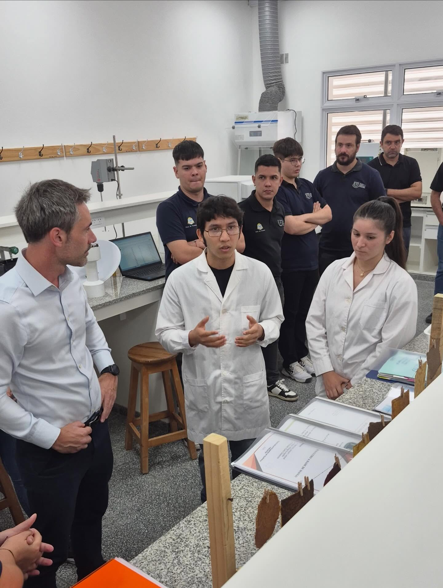
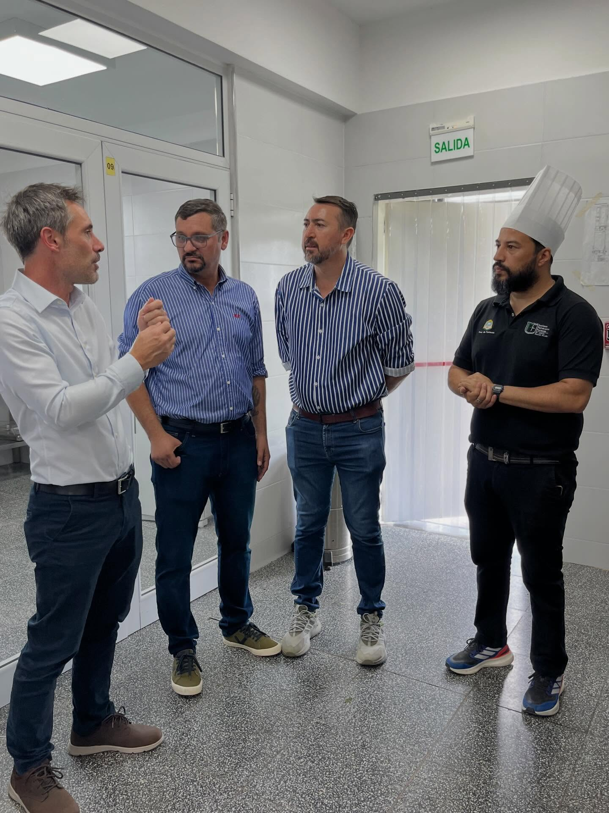
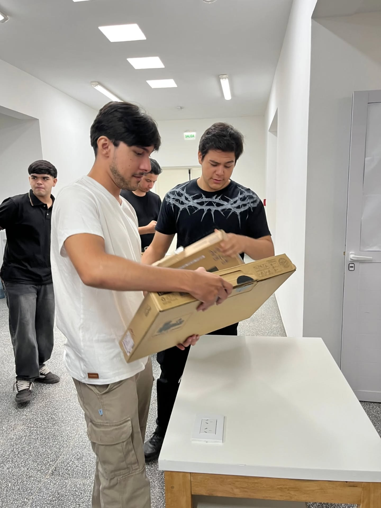

Bienvenido
El Instituto Politécnico Formosa es un Organismo Descentralizado de la Administración Pública, relacionado con el poder ejecutivo a través del Ministerio de Cultura y Educación de la Provincia de Formosa establecido en el Decreto Nº 18 del 2018.




El IPF como institución educativa realiza importantes
actividades tales como brindar educación superior técnica y
tecnológica en áreas ocupacionales específicas, a la vez que
forma estudiantes orientando su actuación profesional a los
diversos sectores del trabajo y producción.
Testimonio de Brandon Pzocik, egresado del Instituto Politécnico
Formosa 2025, para el Area Audiovisual de AGENFOR: “La cursada
fue muy intensa durante estos dos años, muchas horas en el
Instituto, pero, así y todo, fue llevadero por todos los
beneficios que nos ofrecen.”
Desde el segundo cuatrimestre de 2025, todas las actividades se
concentran en el nuevo edificio ubicado en el Polo Científico,
Tecnológico y de Innovación.
El instituto fue sede del Formosa Hack 2025, maratón de
programación que reunió a más de 130 desarrolladores de diversas
instituciones de la provincia.
En mayo de 2026 se lanzó oficialmente el "Ciclo de Visitas
Estudiantiles" para que alumnos de escuelas secundarias
proyecten su futuro profesional dentro del instituto